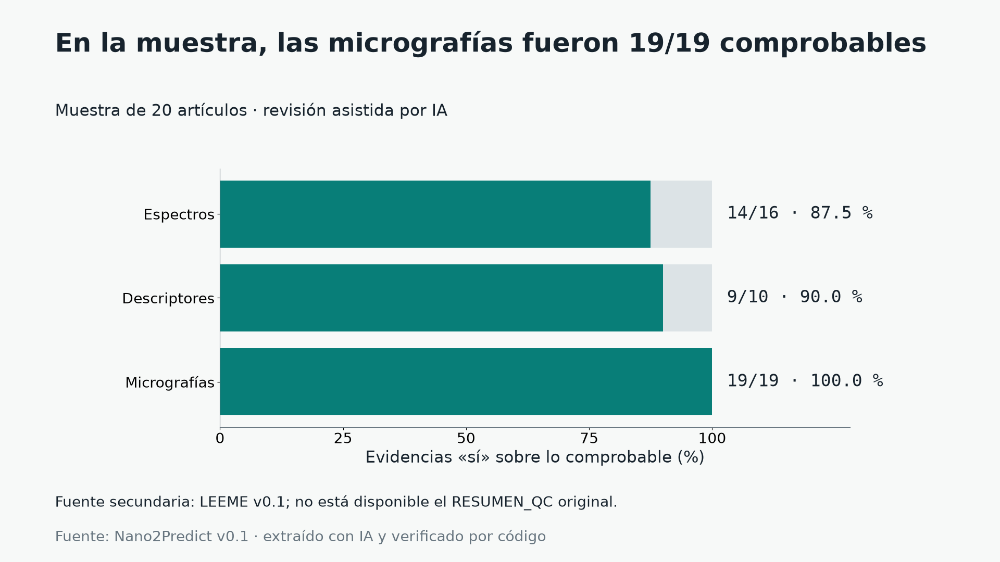

HACKATÓN · NANOINFORMÁTICA · BASE v0.1
De la literatura a la evidencia que se puede comprobar.
Nano2Predict reúne micrografías, medidas y espectros de nanoportadores, cada dato con la cita del artículo de donde sale. Y pone a prueba, con honestidad, qué se puede predecir con ellos.
← → cambiar de sección · P modo presentar · F pantalla completa
1 · EL PROBLEMA
Los datos existen, pero están encerrados en PDFs.
Cada laboratorio mide el tamaño, la carga y la forma de sus nanopartículas y lo publica en un artículo: en tablas, en pies de figura, en frases sueltas. Para entrenar un modelo hacen falta tres cosas juntas:
- 1La micrografíala imagen de microscopía electrónica
- 2Las medidas de la misma muestratamaño, PDI y potencial zeta
- 3La fuenteDOI y cita textual para volver al artículo
Sin esa base, no hay modelos. Así que empezamos por construirla.

2 · CÓMO SE CONSTRUYÓ
Cada dato lleva su cita, y un programa comprueba que existe.
- 01
Búsqueda
Europe PMC, solo acceso abierto. Licencias: 1.823 CC BY y 1 CC0, para poder mostrar las imágenes con crédito al DOI.
- 02
Extracción con IA
Un modelo de lenguaje lee el texto completo y propone micrografías, técnicas, tamaño, PDI, zeta y espectros.
- 03
Verificación por código
La cita textual y los números deben aparecer en el artículo. Si no, se rechazan. Solo 2 artículos tuvieron citas rechazadas.
- 04
Control de calidad
Muestra de 20 artículos revisada con ayuda de una IA. Estimación preliminar, no la precisión global.
Un dato real, de la figura a la cita
2 · CONTROL DE CALIDAD
Revisamos una muestra de 20 artículos. La revisión fue asistida por IA.
Cómo leerlo: «no comprobable» no es un error: el dato no pudo contrastarse con lo visible del artículo. La muestra es pequeña y la revisión no fue humana; es una estimación preliminar por campo, no la precisión de toda la base.

equipo/qc_carlos/RESUMEN_QC.md.3 · EL CAMINO
De una hipótesis preregistrada a una base congelada.
4 · LA BASE EN FIGURAS
Qué hay dentro de la base.
5 · EL PRODUCTO
El Atlas: la base, navegable.
- Filtra por portador y técnica. Por ejemplo, liposomas con cryoTEM.
- Cada ficha trae su cita. Micrografía, DOI, tamaño, PDI, zeta y la frase del artículo que respalda cada medida.
- El modelo, por separado. La etiqueta de la base y la predicción nunca se mezclan; la predicción es exploratoria. Se muestran las micrografías más parecidas, siempre de otros artículos.
Si la vista previa queda en blanco, sirve la carpeta con python -m http.server 8000 desde producto/ y abre http://localhost:8000/web/.
La vista previa del Atlas se carga solo si la pides.
6 · MODELOS
Una escalera de lo simple a lo complejo, siempre contra una línea base.
Todo se evalúa separando por artículo (5 particiones): nunca hay figuras o muestras del mismo artículo en entrenamiento y en prueba. Los resultados son modestos, y los presentamos como modestos.
7 · DECISIONES
Qué decidimos, por qué, y con qué evidencia.
| # | Decisión | Por qué | Evidencia | Estado |
|---|
8 · LIMITACIONES
Lo que sabemos que nos falta.
Lo que no afirmamos
- Que los datos estén validados por personas: el control de calidad fue en 20 artículos y asistido por IA.
- Que el modelo «acierte» o funcione en producción: son resultados exploratorios, sin validación externa.
- Que se pueda predecir el tamaño: el error relativo mediano sigue en ≈ 44 %.
9 · SIGUIENTES PASOS
Lo que sigue.
CRÉDITOS
Gracias.
- Europe PMC por abrir el acceso a la literatura científica. Los artículos y figuras usados son de licencia CC BY, con crédito al DOI.
- Kabré (CeNAT · Laboratorio Nacional de Computación Avanzada, CNCA), donde se calcularon los vectores de imagen.
- El profesor del curso de Quimioinformática, por sus preguntas y su guía.
- Equipo: Héctor (datos y modelos), Carlos (Atlas) y Bryan (presentación y video).
Reproducir esta presentación
python producto/presentacion/construir_datos.py
cd producto
python -m http.server 8000
# abrir http://localhost:8000/presentacion/Nano2Predict · base v0.1 ·